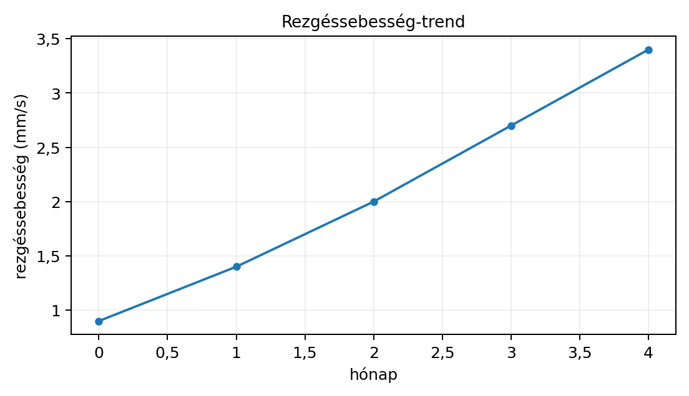

Statikus változat (mint a PDF-ben)
Egy üzemben a szivattyúmotor évente kétszer váratlanul leáll, mert a csapágy kopása csak akkor derül ki, amikor a gép már „beesik”. Az elosztóban egy sorkapocs meglazul, melegszik, a szigetelés elfeketedik, de senki sem nézte meg, mert „amíg megy, nem nyúlunk hozzá”. A karbantartási terv nélküli üzemeltetés nem takarékos: a váratlan leállás drágább, mint a tervszerű ellenőrzés, és a hibás szerelvény életveszélyes is lehet.
Ebben az alfejezetben megtanulod, hogyan készíts karbantartási tervet egy motorhoz és egy elosztóhoz, hogyan határozd meg az ellenőrzési gyakoriságot, és hogyan értelmezd a rezgés-, hő- és áramfelvétel-méréseket. A cél nem az, hogy felesleges munkát végezz, hanem hogy a meghibásodást időben előre jelezd.
A csapágykopás nem egyik napról a másikra alakul ki. A rezgéssebesség mérése megmutatja a folyamatot. Az alábbi ábra egy képzeletbeli motor rezgéssebességének alakulását mutatja 4 hónapon keresztül:

Az ábra azt mutatja, hogy a rezgéssebesség lassan, de folyamatosan nő. Ha csak egyszer mérnél, 3,4 mm/s értéket látsz, ami még nem feltétlenül vészes; de a trend az, ami alapján dönteni lehet. A karbantartási terv ilyen idősorokat gyűjt, és akkor avatkozik be, amikor a görbe emelkedni kezd – nem akkor, amikor a gép már leáll.
A karbantartásnak alapvetően három megközelítése van (javító, megelőző, állapotalapú); az állapotalapú finomítása az előrejelző karbantartás. A gyakorlatban ezeket kombináljuk.
Definíció. - Javító karbantartás: akkor cselekszünk, amikor a hiba már bekövetkezett. Előnye, hogy nincs időszakos költség; hátránya, hogy a váratlan leállás drága, sőt veszélyes is lehet. - Megelőző karbantartás: tervszerűen, előre rögzített időközönként vagy üzemóra alapján elvégzett feladatok (kenés, tisztítás, szigetelésmérés, kötések utánhúzása, csapágycsere). Célja, hogy a beavatkozás a meghibásodás előtt történjen. - Állapotalapú karbantartás: mérésekkel (rezgés, hőmérséklet, áramfelvétel, szigetelési ellenállás) figyeljük a gép állapotát, és akkor avatkozunk be, ha a mért érték romló tendenciát mutat. Ez a korszerű megoldás, de megfelelő mérőműszert és értékelést igényel. - Előrejelző karbantartás: az állapotalapú karbantartás finomítása, amikor a trend alapján megbecsüljük a hátralévő élettartamot.
Szabály. A karbantartási terv akkor jó, ha: - a gyártói utasításokból indul ki, - az üzemi környezetet is figyelembe veszi (por, nedvesség, hő, rezgés), - a kritikus gépeket gyakrabban ellenőrzi, mint a kevésbé fontosakat, - minden feladatnak felelőse és határideje van, - minden mérést és beavatkozást dokumentál.
Definíció. A karbantartási terv egy táblázat vagy rövid dokumentum, amely felsorolja: - a berendezés azonosítását (pl. M1 szivattyúmotor, EL-01 főelosztó), - a karbantartási feladatokat (szemrevételezés, mérés, kenés, csere, tisztítás), - a feladat gyakoriságát (heti, havi, féléves, éves), - a felelős személyt, - a szükséges eszközöket és anyagokat, - az elfogadási határokat (pl. szigetelési ellenállás ≥ 1 MΩ, rezgéssebesség < 4,5 mm/s – ellenőrizendő: a pontos határ a gyártó/szabvány szerint), - a következő esedékességet.
Karbantartási napló. A napló a végrehajtott munkák és mért értékek időrendi gyűjteménye. Bejegyzései legalább: - dátum, üzemóra-állás, - elvégzett feladat, - mért értékek (pl. szigetelési ellenállás, rezgéssebesség, hőmérséklet, áramfelvétel), - cserélt alkatrész, anyagfelhasználás, - az eredmény értékelése (elfogadható / figyelmeztető / nem megfelelő), - a következő ellenőrzés időpontja, - a karbantartó neve és aláírása.
Továbbvitt eredmény. A karbantartási napló vezetésének logikája, a mért értékek rögzítése és a trendek értékelése később visszatér a Védelmi mérések gyakorlata és a jegyzőkönyv kitöltése alfejezetben, mert a védelmi mérések is időszakos ciklusokat követnek; a jegyzőkönyv a karbantartási napló elektronikus rokonának tekinthető.
A korszerű karbantartás alapja a mérés. Három mennyiség gyakori:
A csapágy- és kiegyensúlyozatlansági hibák a rezgéssebesség növekedésében jelentkeznek. A mérést rezgésmérő műszerrel, a csapágyházon, több irányban (vízszintes, függőleges, tengelyirány) végezzük. Az értéket mm/s-ban (effektív érték, rms) jegyezzük fel. A határokat a géposztály és az alapozás szerint kell megállapítani; a gyakran használt ISO 10816 (újabb jelölése ISO 20816 sorozat) ajánlásokat ad (ellenőrizendő: aktuális kiadás és hazai átvétel). Például az ISO 10816-3 (ma ISO 20816-3) szerint 15–300 kW-os, rugalmas alapozású gépnél kb. 2,3 / 4,5 / 7,1 mm/s a zónahatár (jó / korlátozottan elfogadható / beavatkozás), kisebb vagy merev alapozású gépnél ennél kisebbek (ellenőrizendő: ISO 20816 vonatkozó része, gyártói adat). A fejezet példái a 4,5–7,1 mm/s figyelmeztető sávot és a 7,1 mm/s beavatkozási határt használják, ami közepes, rugalmas alapozású gépre érvényes; a kis gépekre vonatkozó szigorúbb határokat lásd a Gépek megbontása, javítása és üzembe helyezése alfejezetben, a motor elfogadási mérései között. A mindenkori gyártói adatlap az irányadó.
A melegedő csatlakozás, sorkapocs, kontaktus vagy motor tekercs a meghibásodás előjele. Hőkamerával feszültség alatt, érintés nélkül meg lehet állapítani a melegedő pontokat. A mért hőmérsékletet mindig a környezeti hőmérséklethez és a hasonló terhelésű, egészséges pontokhoz viszonyítjuk. Egy 10–15 °C hőmérséklet-különbség azonos terhelésű kapocs között már lazuló kötésre utalhat (ellenőrizendő: a gyakorlati határ a gyártói és szabványi előírásoktól függ).
A háromfázisú motor fázisáramait lakatfogóval mérjük. Egészséges gépnél a fázisáramok közel egyenlők. Ha az aszimmetria tartósan meghaladja a 10 %-ot, akkor fáziskimaradás, tekercs- vagy csatlakozóhiba gyanúja merül fel. Az aszimmetria számítása:
ahol (az átlagtól való legnagyobb eltérés alapján, ugyanúgy, mint a Diagnosztika: szemrevételezés, mérések, hibajegyzőkönyv alfejezetben; ellenőrizendő: gyártói előírás).
Példa. Adott egy motor három fázisárama: , , . Az átlag:
Az aszimmetria:
Ez még a 10 %-os határ alatt van, de már a közelében: az okot (laza csatlakozás, tekercs, fázisfeszültség-különbség) érdemes keresni, és a mérést rövidebb időközzel megismételni; 10 % felett a motort le kell állítani és ki kell vizsgálni. A pontos határ a gépkönyvben vagy szabványban található; ez a számítási mód tanulási célú.
Példa. Egy motor rezgéssebessége az első méréskor , majd 4 hónap múlva lett. A növekedés lineárisnak tekinthető. Mennyi idő múlva éri el a határértéket?
A növekedési ütem:
A hátralévő idő:
Tehát a mai trend alapján kb. 6 hónap múlva éri el a határt. A karbantartást nem 6 hónap múlva, hanem előbb, 1–2 hónapon belül kell ütemezni, és közben sűrűbben mérni, mert a kopás nem mindig lineáris.
Példa – hibás mérési értelmezés. Ha valaki csak egyszer mér, és 3,4 mm/s értéket kap, azt mondhatja: „ez még nem vészes, nincs teendő”. Ez hibás, mert a trend emelkedő; a 4 hónappal korábbi 0,9 mm/s-hez képest már jelentős a romlás. A karbantartási tervben ezért mindig az alapértékhez és a korábbi mérésekhez kell viszonyítani.
Szabvány. A karbantartási tervet nem egyetlen szabvány írja elő, hanem a berendezések üzemeltetésére és a munkavédelemre vonatkozó előírások, valamint a gyártói dokumentáció együtt. A villamos elosztókra az MSZ HD 60364-6 (időszakos felülvizsgálat) és az MSZ EN 61439 (kapcsolóberendezések gyártói előírásai) ad támpontot; a gépek villamos ellenőrzésére az MSZ EN 60204-1 (gépek villamos berendezései) vonatkozik. A rezgésmérés nemzetközileg elfogadott alapelveit az ISO 10816 sorozat tartalmazza, de a konkrét határokat minden esetben a gépkönyv és az üzemeltetési feltételek szerint kell meghatározni (ellenőrizendő: aktuális szabványszámok és határértékek). A szabványok időben változnak, ezért a méretezésnél és határértéknél mindig a hatályos kiadást kell használni.
Valós eset. Egy ipari mosodában a centrifugamotor csapágya évente kétszer tönkrement. A gép leállása 2 órás termeléskiesést okozott; a sürgősségi javítás anyag- és munkadíja kb. 150 000 Ft volt (becsült érték, ellenőrizendő). A karbantartó cég bevezetett egy havi rezgésmérést: a csapágyházon mért rezgéssebesség 0,8 mm/s-ról 3 hónap alatt 4,0 mm/s-ra nőtt. A trend alapján a csapágyat tervezett leállás keretében cserélték. A csere anyagköltsége 40 000 Ft volt, a munka 2 óra (16 000 Ft). A teljes költség 56 000 Ft, és a termelés nem állt le váratlanul. A példa azt mutatja, hogy a mért trend alapján ütemezett, tervszerű csere olcsóbb és biztonságosabb, mint a javító karbantartás.
Hiba. Ha az üzemeltető „spórolásból” elhalasztja a mérést, a csapágy tönkremegy, a forgórész hozzáér az állórészhez, és a motor tekercse is károsodik. A javítás már nem 56 000 Ft, hanem 400 000 Ft, és a gép napokig áll. A karbantartás elmaradása tehát nem spórolás, hanem kockázat.
Gyakorlat.
Cél: karbantartási terv összeállítása egy szivattyúmotorra és egy lakáselosztóra, valamint az első állapotfelmérő mérés elvégzése tanműhelyi környezetben.
Eszközök és anyagok: gépkönyv vagy katalógus, karbantartási terv minta, karbantartási napló; lakatfogó multimeter, rezgésmérő (vagy okostelefonos rezgésmérő próbaképpen), hőkamera vagy infravörös hőmérő, szigetelési ellenállás-mérő, kéziszerszámok, nyomatékkulcs a kötésekhez.
Biztonsági korlát. Hálózati feszültségű (230/400 V) munkát csak jogosult, arra képesített személy végezhet. A tanuló ilyen munkát önállóan nem gyakorolhat. Az alábbi útmutató tanműhelyi (törpefeszültségű) környezetre vagy jogosult oktató felügyeletére vonatkozik; hálózati feszültségen önállóan ne végezd.
Öt biztonsági szabály. 1. Lekapcsolás (a motor és az elosztó leválasztása a hálózatról). 2. Visszakapcsolás elleni biztosítás (lakat, tiltó tábla, kikapcsolt főkapcsoló). 3. Feszültségmentesség ellenőrzése (kétpólusú feszültségvizsgálóval, működőképes műszerrel, minden fázis és a nulla és a védővezető között). 4. Földelés és rövidre zárás (ha a munkavégzési előírás megkívánja, pl. visszatáplálás vagy indukált feszültség veszélye esetén; a kondenzátorok és kábelek tárolt töltését előbb ki kell sütni) (ellenőrizendő: MSZ EN 50110-1, üzemeltetői előírás). 5. Szomszédos, feszültség alatt álló részek lefedése.
Az öt szabály a leválasztott állapotú méréseknél (4b. lépés) kötelező. A hőkamerás és lakatfogós mérés (4a. lépés) üzem közben történik, ezért azt csak jogosult személy végezheti, zárt burkolatnál, a kapcsokhoz és a feszültség alatti részekhez nem nyúlva, megfelelő védőfelszereléssel és mérési kategóriájú műszerrel; a műszert használat előtt ellenőrizd.
A 2–4. lépés kritikus pontjait az alábbi ábra egy szivattyúmotoron (a) és egy elosztón (b) mutatja, a 3. lépés példaterve szerinti gyakorisággal. A kör alakú jelölők (1–3, 8–10, 13) a feszültség alatti berendezésen, jogosult személy által végzett, érintés nélküli vagy műszeres ellenőrzések (4a. lépés: rezgés, csapágyhőmérséklet, fázisáramok, hőkamera, szemrevételezés, FI próbagomb; az éves hibavédelmi mérés a felülvizsgáló feladata); a négyzet alakúak (4–7, 11, 12) csak leválasztott állapotban, az öt biztonsági szabály után végezhetők (4b. lépés: tisztítás, kötések nyomatéka, szigetelési ellenállás, PE-folytonosság).
Az ábra a karbantartási terv „feladat – gyakoriság – állapot” oszlopainak vázlata: minden számozott pont egy sor a tervben és a naplóban. A gyakoriságok a példatervet követik; a tényleges értéket a gyártói adatlap és az üzemi tapasztalat szabja meg. A HTML-kiadásban a két jelölőcsoport rétegként ki-be kapcsolható.
Ellenőrzési pontok. - A mért áramok a motor adattábláján megadott névleges áramot nem lépik túl tartósan. - A rezgéssebesség a gépkönyv szerinti határ alatt van, és a trend nem meredeken emelkedő. - A kapcsok hőmérséklete nem tér el 10–15 °C-nál többel a hasonló terhelésű, egészséges pontokétól. - A szigetelési ellenállás a vonatkozó határérték felett van (500 V DC mérőfeszültséggel – 400 V-os berendezésnél; minimum 1 MΩ, egészséges berendezésnél jellemzően sokkal nagyobb; ellenőrizendő: MSZ HD 60364-6 és gyártói adat; mérés előtt az elektronikus eszközöket és a túlfeszültség-levezetőket le kell választani).
Tipikus hibák a gyakorlatban. - A mérést csak akkor végzik, amikor a gép már hibás. - A mért értékeket nem írják be a naplóba, így nincs trend. - A rezgésmérést rossz helyen, rossz irányban végzik, ezért az érték nem összehasonlítható.
Hiba 1. Csak javító karbantartást alkalmaznak, mert „a megelőzés felesleges költség”. A váratlan leállás miatt a termeléskiesés és a sürgősségi javítás rendszerint többe kerül, mint a tervszerű ellenőrzés. Helyes gyakorlat: legalább a kritikus gépekre készíts karbantartási tervet.
Hiba 2. A mért rezgéssebességet vagy hőmérsékletet önmagában értékelik, nem a korábbi mérésekhez képest. Egy 3,4 mm/s rezgéssebesség önmagában nem feltétlenül rossz, de ha a múlt hónapban 1,0 mm/s volt, akkor a trend veszélyes. Mindig az alapértékhez és a trendhez viszonyíts.
Hiba 3. A csapágyat túlzsírozzák, mert „a több kenés jobb”. A túlzott mennyiségű zsír melegedést és tömítéskárosodást okoz, ami éppen a csapágy tönkremenetelét gyorsítja. A gyártói adagolási utasítást kell követni, és az utánkenés mennyiségét a naplóban rögzíteni.
Hiba 4. A kötések utánhúzását „érzésre” végzik, mert nincs nyomatékkulcs. A túlzott nyomaték a kapocs deformálódásához, a túl kicsi a melegedéshez vezet. A gyártói nyomatékértéket kell használni.
1. feladat (A). Definiáld a javító, a megelőző és az állapotalapú karbantartást. Adj mindegyikre egy konkrét példát!
2. feladat (A). Egy motor fázisáramai: 28 A, 29 A, 27 A. Számítsd ki az aszimmetriát! Értékeld az eredményt!
3. feladat (B). Egy szivattyúmotor rezgéssebessége a 0. hónapban 1,1 mm/s, a 3. hónapban 2,6 mm/s. A megengedett határ 7,1 mm/s. Tegyük fel, hogy a növekedés lineáris. Hány hónap múlva éri el a határt? Mikorra ütemezd a következő mérést?
4. feladat (B). Készíts karbantartási tervet egy 5,5 kW-os, 400 V-os háromfázisú szivattyúmotorhoz és egy lakáselosztóhoz! Sorold fel a feladatokat, a gyakoriságot, a felelőst és a dokumentálási módot!
5. feladat (C). Hőkamerás mérés során az elosztó egyik kismegszakítójának bejövő kapcsa 52 °C, a többi kapocs 30 °C. A terhelés mindhárom fázison egyenletes, kb. 16 A. Milyen lehetséges okokra gondolsz? Milyen kikapcsolt állapotú méréssel erősíted meg a gyanút? Mit javasolsz?
6. feladat (D). Egy motor rezgéssebessége 6,2 mm/s, a fázisáramok 31 A, 32 A, 36 A. A motor névleges árama 32 A. A tekercs szigetelési ellenállása 25 MΩ. Milyen lépéseket teszel a hibakeresés során? Mit kell először ellenőrizned feszültségmentes állapotban?
1. feladat. Javító: akkor javítunk, amikor a hiba bekövetkezett; például kiégett tekercs visszatekercselése. Megelőző: tervszerűen, időközönként végzett feladat; például a motor csapágyának évenkénti utánkenése. Állapotalapú: mérések alapján akkor avatkozunk be, ha az érték romlik; például a rezgéssebesség növekedése miatt csapágycsere.
2. feladat. Átlag = (28+29+27)/3 = 28 A. Az átlagtól való legnagyobb eltérés 1 A, aszimmetria = 1/28×100% ≈ 3,6%. Ez elfogadható; érdemes figyelni a trendet.
3. feladat. Növekedési ütem = (2,6−1,1)/3 = 0,5 mm/s/hó. A határig hátralévő idő = (7,1−2,6)/0,5 = 9 hónap. A következő mérést 2–3 hónapon belülre érdemes ütemezni, mert a lineáris közelítés nem biztos.
4. feladat. Példa terv: - Motor havi: szemrevételezés, rezgés, áram, hőmérséklet – felelős: villanyszerelő; napló. - Motor féléves: szigetelési ellenállás, kapocs ellenőrzés, ventilátor tisztítás – felelős: karbantartó; napló. - Elosztó éves: szemrevételezés, hőkamerás vizsgálat, kötések nyomatékellenőrzése, hibavédelmi mérés (régi: érintésvédelmi mérés) – felelős: villamos biztonsági felülvizsgáló; jegyzőkönyv és napló. A gyakoriság a gyártói utasítás szerint módosítható.
5. feladat. Lehetséges ok: laza csatlakozó csavar, oxidált érintkező, túlterhelt kapocs, rossz kábelvégezés. Feszültségmentes állapotban meg kell mérni a csatlakozó átmeneti ellenállását (pl. milliohm-mérővel), ellenőrizni a szorító nyomatékot, és megvizsgálni a vezeték keresztmetszetét. Javaslat: a kapcsot meg kell tisztítani, utánhúzni előírt nyomatékkal, szükség esetén cserélni a kismegszakítót, és hőkamerás ellenőrzést végezni a javítás után.
6. feladat. Először feszültségmentesíts, és ellenőrizd a kapcsokat, a tekercs ellenállását, a csapágy játékát. A rezgéssebesség 6,2 mm/s a figyelmeztető sávban (4,5–7,1 mm/s) van, a beavatkozási határ közelében, és a döntő a trend. Az átlag 33 A, az áramaszimmetria 3/33×100% ≈ 9,1%, ami a 10 %-os határ közelében van; az L3 árama (36 A) 12,5 %-kal meghaladja a névleges 32 A-t, ami túlterhelés és/vagy aszimmetria jele, a hőkioldó leoldhat. Ellenőrizni kell a fázisfeszültségeket, a csatlakozásokat és a tekercset. A szigetelési ellenállás 25 MΩ elfogadható. A javaslat: mérés után a csapágyat és a kötéseket kell vizsgálni, és a motort tervezett karbantartásra leállítani.
A karbantartási terv a biztonságos és gazdaságos üzemeltetés alapja. Megkülönböztetünk javító, megelőző és állapotalapú karbantartást; a korszerű gyakorlat a mérési eredményeken alapuló, trendkövető módszert részesíti előnyben. A motoroknál a rezgéssebesség, a hőmérséklet és a fázisáram-aszimmetria; az elosztóknál a kapcsok hőmérséklete, a szigetelési ellenállás és a kötések nyomatéka a legfontosabb jellemző. Az aszimmetriát az átlagtól való legnagyobb eltéréssel számítjuk: (ugyanúgy, mint a Diagnosztika: szemrevételezés, mérések, hibajegyzőkönyv alfejezetben). A karbantartási napló rögzíti a mért értékeket, a beavatkozásokat és a következő esedékességet; enélkül nincs trend, és a döntések vakon születnek. A tervszerű ellenőrzés költsége általában lényegesen kisebb, mint a váratlan leállásé. Továbbvitt eredmény. A mért értékek rögzítésének és a trendek értékelésének módszere visszatér a Védelmi mérések gyakorlata és a jegyzőkönyv kitöltése alfejezetben, ahol a védelmi mérések is időszakos ciklusokat követnek; a karbantartási terv logikája a vizsgafelkészülés komplex feladataiban is hasznosítható. A határértékeket mindig a hatályos szabvány és a gyártói adatlap szerint kell ellenőrizni.